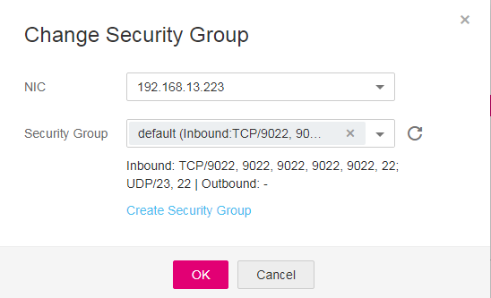

Scenarios
To change the security group of an ECS NIC, perform the operations described in this section.
Procedure
- Log in to the management console.
- Click
 in the upper left corner and select your region and project.
in the upper left corner and select your region and project. - Under Computing, click Elastic Cloud Server.
- In the ECS list, locate the row that contains the target ECS. Click More in the Operation column and select Manage Network > Change Security Group.
The Change Security Group dialog box is displayed.
Figure 1 Change Security Group
 - Select the target NIC and security groups as prompted.
You can select multiple security groups. In such a case, the rules of all the selected security groups will be aggregated to apply on the ECS.
To create a security group, click Create Security Group.

Using multiple security groups may deteriorate ECS network performance. You are suggested to select no more than five security groups.
- Click OK.